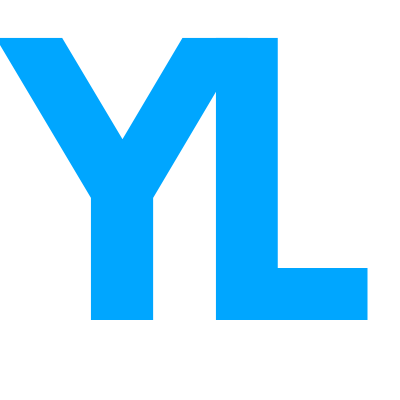

<mat-toolbar color="primary">
  <span></span>
  <span *ngIf="!(router.url === '/')">
      
  </span>
  <div class="spacer"></div>
  <a mat-button routerLink="">Home</a>
  <a mat-button>Qui som?</a>
  <a mat-button>Contacte</a>
  <a mat-button>Competicions</a>
  <a mat-button>Registrar-se</a>
  <a mat-button routerLink="login">Iniciar sessió</a>

</mat-toolbar>